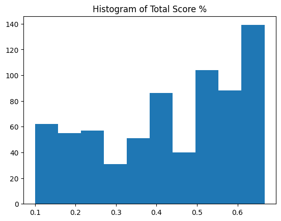
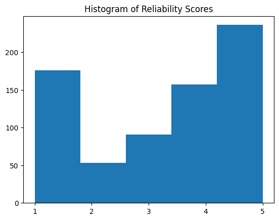
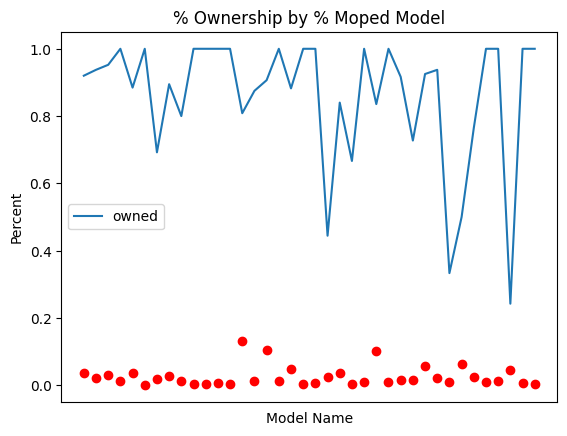
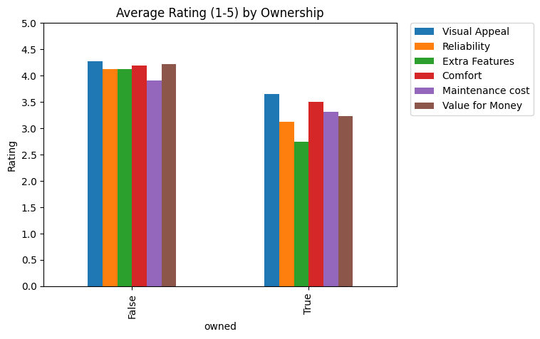
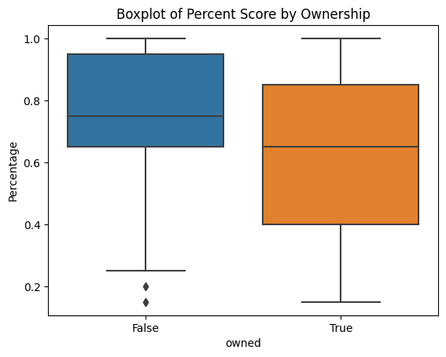
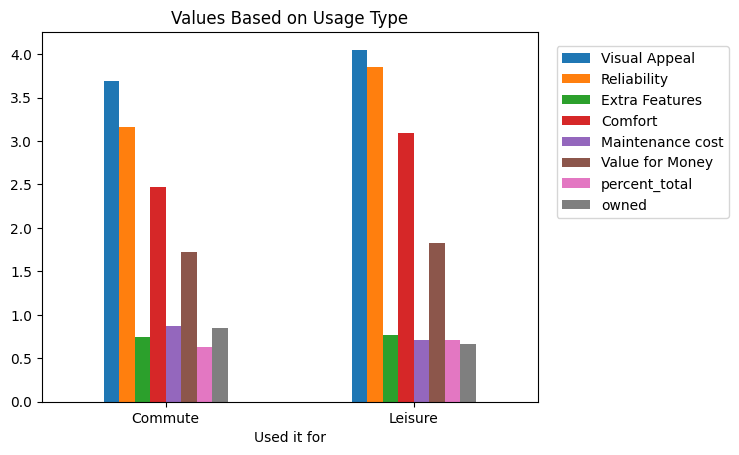
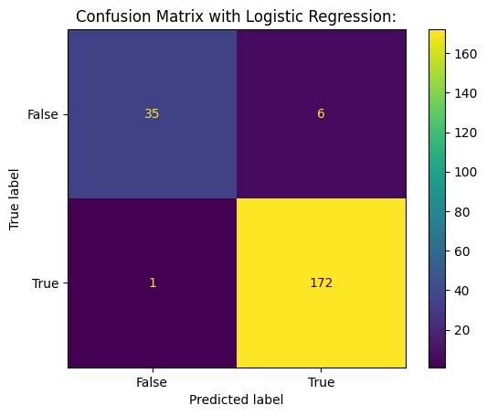

This project was presented to me for certification by DataCamp. The data and original ipynb can be found by following the source code link on the left nav.
EMO is a manufacturer of motorcycles. The company successfully launched its first electric moped in India in 2019. The product team knows how valuable owner reviews are in making improvements to their mopeds. Unfortunately they often get reviews from people who never owned the moped. They don't want to consider this feedback, so would like to find a way to identify reviews from these people. They have obtained data from other mopeds, where they know if the reviewer owned the moped or not. They think this is equivalent to their own reviews.
Your manager has asked you to answer the following: Can you predict which reviews come from people who have never owned the moped before?
The data has been formatted in an excel document following the layout in the following table.
| Column Name | Criteria |
|---|---|
| Used it for | Character, the purpose of the electric moped for the user, one of "Commuting", "Leisure". |
| Owned for | Character, duration of ownership of vehicle, one of "<= 6 months", "> 6 months", "Never Owned". |
| Model name | Character, the name of the electric moped |
| Visual Appeal | Numeric, visual appeal rating (on a 5 point scale) |
| Reliability | Numeric, reliability rating (on a 5 point scale) |
| Extra Feature | Numeric, extra feature rating (on a 5 point scale) |
| Comfort | Numeric, comfort rating (on a 5 point scale) |
| Maintenance cost | Numeric, maintenance cost rating (on a 5 point scale) |
| Value for money | Numeric, value for money rating (on a 5 point scale) |
Upon examination, the data was found to have four columns with null/missing values: Extra Features, Comfort, Maintenance cost, Value for Money. The largest amount of missing values came from Extra Features and Maintenance cost at 530 and 537 respectively, accounting for approximately 75% of the data in those columns.
The missing values from above were replaced with 0's in orer to make the dataset viable for further analysis. Further, as we look to ultimately predict whether a reviewer has owned a moped, the column "owned" has been added to the data set with True or False values corresponding to the entry in "Owned for". The "null_sum" and "percent_total" columns have been added as possible points of interest, where null_sum represents the sum of the columns for which missing values were replaced and percent_total is the sum of each rated column out of a possible total of 30.
A sample overview of the data is given in the histograms Histogram of Total Score % and Histogrm of Reliability Scores. Here we see that most of the reviews were at one extreme or the other (given a rating of 1, 4, or 5). This may hold for each of the other features, seeing as the percent total is mostly under 50%. It is of interest to look at how ownership affects these scores.
 The data showed a mostly positive correlation between most ratings, for example, a higher score on Reliability generally indicated a higher score on Visual Appeal. Interestingly, in almost all cases, the ratings by non-owners were higher on average than those by owners (explored in the next subsection). After this finding, the data was grouped by each of the "owned", "Used it for", and "Model Name" columns to look for further correlations. In the figure % Ownership by % Model, the ownership percentage by model was viewed as a blue line against the percentage of each type of model found in the data (red dots). Strong dips in ownership percentage did not correspond to surges or dips in the percentage of model, so this data was found to have no strong impact. That is, the review of an Ampere Magnus EX was about as likely to be from an actual owner as a review for a Hero Electric Optima. The "Model Name" column was dropped from the dataframe.
The data was further grouped by owbership status and by usage type, and the results will be explored more in the following sections. For now, looking at the correlation heatmap reveals another interesting point about this data.
From the above, there are three findings to take note of (values listed are between -1 and 1, and values closer to either extreme indicate a stronger linear relationship).
On the third point, the data was split into three tables, one where the "Extra Features" and "Maintenance cost" columns both had missing values, one where "Comfort" and "Value for Money" columns both had missing values, and a third that consisted of the remaining rows not caught by the first two. This split the data into 189, 512, and 12 entries, respectively. Since all four of the mentioned columns were empty in the third dataframe, and given the low number of such entries, it was found most likely that these respondants just did not provide an answer for these values. However, given the large number of mutually exclusive entries in the first two tables, it would be safe to assume that respondants were given one of two different questionnaires. This changed the total possible points of a review from 30 to 20, and updates to the "percent_total" column were made.
 Looking at the first figure above solidifies the previous assertion that on average, non-owners provided higher review ratings than owners. Not only this, but the reviews were higher by non-owners in each individual category! In the second figure, we are looking at the median and first and third quartiles of ratings instead of the average. And again, it is found that non-owners provide higher ratings (usually) than owners, as their box and median line is not only higher, but also more vertically condensed. While this may seem surprising at first, we can take a moment to go on a short tangent and think of this in a different way. A person may rate a game low, even before its release, due to release trailers, previous game entry bias, or more divisive factors incorporated into the game. However, this mentality is more geared towards luxury or entertainment. Many people may view vehicles as a luxury, a status identifier, or even as family (if you have ever had that "ol reliable" car that's lasted years). But just as a homeowner would be more scrutinous of the work a plumber does at their house, so too would a person who relies on this vehicle for day to day transportation be more likely to scrutinize the things like maintenance cost and comfort, instead of a friend who borrows it for a day and only has to fill up the tank. That is not to say that this is the only reason for the disparity in reviews, but simply a way of looking at it so that it is not as surprising.
Back to looking solely at the data. The last grouping examined was the data by usage type, Commuting or Leisure, in the figure Values Based on Usage Type. Regarding the individual questions, we see a clear difference in "Visual Appeal", "Reliability", and "Comfort" between the two, with Leisure drivers rating higher on average. Perhaps they purchased nicer models, but since the model did not have much impact on ownership, this was not explored. More to the point of the purpose of this analysis, we see that Commuter reviews were much more likely to be from owners, with commuter reviews having an ownership percentge around 85%, and leisure reviews being around 66%.
Since we will be working under the assumption that two different question sets were given to reviewers, the null_sum column no longer provided useful information, and was dropped. Further, the percent totals were updated to be out of 20 points instead of 30. As stated before, the column containing the models of mopeds was dropped, as it did not have a significant impact. To prepare the data for modeling, the "Used it for" column was changed to have a 0 representing Commute and 1 representing Leisure, and the "owned" column was changed from True and False to 1 and 0. Further, since there were two different question sets, the column "Questionnaire" has been added, which implicitly encodes which of the two columns were null, keeping information loss to a minimum as we replace 0's with the rounded mean by ownership in each of these columns.
The question posed is to predict if a review came from a non-owner. Since the data given provides whether or not the moped was owned (the output we are looking for), we are looking at a supervised machine learning problem. The problem is a boolean (True or False) question, so the baseline model chosen is a logistic regression model. This model is used in contexts such as determining whether a tumor is malignant or benign based on some data, so it seems like a good place to start. As a comparison model, a random forest will be used. In addition to being a suitable model for this problem, it is my personal favorite supervised learning model. A single tree may have worked as well, in which the model looks at information, poses a condition, and moves forward based on whether the data satisfied the condition or not until it reaches a conclusion; much like a flowchart! The random forest will do this, but with many trees. The models are obtained from the sklearn python package, along with preprocessing (MinMaxScaler) and data separation tool train_test_split.
First the data was manually split to select the predictor and target variables, and our numeric variables were scaled using the MinMaxScaler. Once this was done, the data was split into two groups: (X_train, y_train) and (X_test, y_test) using the train_test_split function with a test size of 30%. Then both model types were initialized and fit to the training data. From here, the models were used to predict outputs from the X_test variable, and scored against the true y_test values. The confusion matrices for both models follow.
To break down the confusion matrices, first note that true and false in this case correspond to whether a review was written by an owner (true) or non-owner (false). The first box is the number of entries where the model predicted false and the actual value was false. To the right we have predicted true, actually false; below this is predicted and actually true; and the bottom left is predicted false but is true. In that order these are called True Negative (TN), False Positive (FP), True Positive (TP), and False Negative (FN). Based on the two confusion matrices, both models performed pretty well.
We are looking to predict if a review has been written by a non-owner, so we would like to maximize True Negatives and minimize False Positives. Thus we are looking at the **recall** of the models. The specific value in this case is given by TN/(TN+FP). This was computed to be 85.36% for the Logistic Regression model and 97.56% for the Random Forest model. This means that in the Random Forest model, we expect to correctly identify a non-owner 97.56% of the time. Of course, we should not shirk the precision of a model either, and here we see precision scores of 96.7% and 99.5% for the models, respectively. This is simply a proportion of how many items the models predicted correctly. In both regards, the Random Forest model has outperformed the Logistic Regression model.
Given the relative performances of the model, it is comfortable to say that we are able to predict which reviews are coming from non-owners. Assuming the data provided matches the data that EMO will be receiving, it is recommended that the Random Forest is used to detect reviews by non-owners.